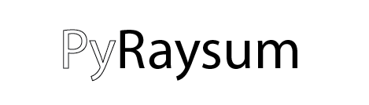

pyraysum 
Quick Links
GitHub Repository
References
Getting Started
Licence
Installation
Usage
API
Classes
Modules
Tutorials
Example 1: Compare PyRaysum with other synthetic and real data
Example 2: Reproducing Receiver Functions for Dipping and Anisotropic Subsurface Structure
Example 3: Invert a Receiver Function
Jupyter Notebooks
Example 1: Compare PyRaysum with other synthetic and real data
Example 2: Reproducing Figure 2 in Porter et al. (2011)
Example 3: Invert a receiver function
pyraysum
Index
Index
A
|
C
|
D
|
E
|
F
|
G
|
M
|
N
|
P
|
R
|
S
|
U
|
W
A
average_layers() (pyraysum.prs.Model method)
C
calculate_rfs() (pyraysum.prs.Result method)
change() (pyraysum.prs.Model method)
Control (class in pyraysum.prs)
copy() (pyraysum.prs.Geometry method)
(pyraysum.prs.Model method)
D
descriptors() (pyraysum.prs.Result method)
E
equivalent_phases() (in module pyraysum.prs)
F
filter() (pyraysum.prs.Result method)
filtered_array() (in module pyraysum.frs)
filtered_rf_array() (in module pyraysum.frs)
G
Geometry (class in pyraysum.prs)
M
make_array() (in module pyraysum.frs)
Model (class in pyraysum.prs)
module
pyraysum.frs
pyraysum.plot
pyraysum.prs
N
null_phaselist() (pyraysum.prs.Control method)
P
parameters (pyraysum.prs.Control attribute)
plot() (pyraysum.prs.Geometry method)
(pyraysum.prs.Model method)
(pyraysum.prs.Result method)
plot_interfaces() (pyraysum.prs.Model method)
plot_layers() (pyraysum.prs.Model method)
plot_profile() (pyraysum.prs.Model method)
pyraysum.frs
module
pyraysum.plot
module
pyraysum.prs
module
R
read_arrivals() (in module pyraysum.frs)
read_control() (in module pyraysum.prs)
read_geometry() (in module pyraysum.prs)
read_model() (in module pyraysum.prs)
read_traces() (in module pyraysum.frs)
remove_layer() (pyraysum.prs.Model method)
Result (class in pyraysum.prs)
rf_wiggles() (in module pyraysum.plot)
run() (in module pyraysum.prs)
S
save() (pyraysum.prs.Control method)
(pyraysum.prs.Geometry method)
(pyraysum.prs.Model method)
seis_wiggles() (in module pyraysum.plot)
set_phaselist() (pyraysum.prs.Control method)
split_layer() (pyraysum.prs.Model method)
stack_all() (in module pyraysum.plot)
stream_wiggles() (in module pyraysum.plot)
U
update() (pyraysum.prs.Model method)
W
write() (pyraysum.prs.Control method)
(pyraysum.prs.Geometry method)
(pyraysum.prs.Model method)
(pyraysum.prs.Result method)